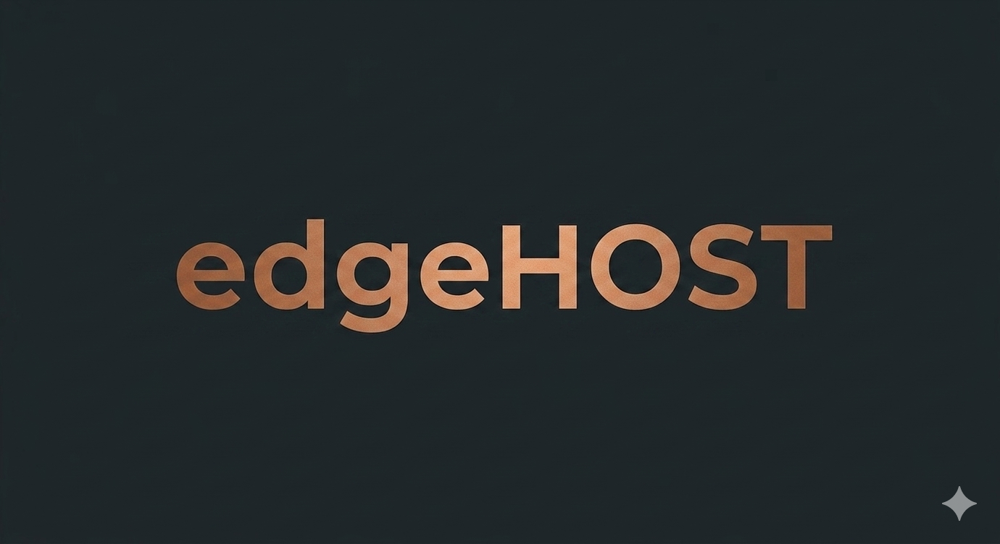

The deployment gate.
From private source to published site.
edgeHOST is the pipeline that takes a site from its private, local-first home and publishes it to the open web — deliberately, only when it's ready. One gate for the whole portfolio; each site to whatever target fits it.
- GitHub Pages
- Deno Deploy
- Cloudflare Pages